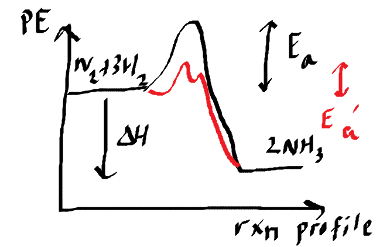

2021-10-23 (Answers)
Question 1
Ammonia can be produced by a process called the Haber process.
a) Write down the equation of Haber process. Specify any condition needed.
N2(g) + 3H2(g) <-> 2NH3(g) (400-450C, 200 atm, Fe catalyst)
b) i) What is activation energy?.
Activation energy is the minimum amount of energy necessary for a reaction to occur.
ii) Draw a energy profile for the Haber process, label the activation energy with and without catalyst.
c) The graph below shows the amounts of nitrogen and hydrogen at different times,
after mixing 1 mole each of the two gases in the container, until equilibrium has been reached.

Given that Kc = 1.929 M2, calculate the volume of the container.
No. of moles of N2(g)(eqm) = 0.9
No. of moles of H2(g)(eqm) = 0.7
No. of moles of NH3(g)(eqm) = 0.2
Let V be the volume of the container.
(0.9/V) * (0.7/V)3 / (0.2/V)2 = 1.929
V = 2 dm3
d) If the volume of the container is gradually reduced to half, calculate the new equlibrium concentrations.
Hence explain how the pressure condition of the Haber process favours the yield.
Kc = 1.929 M2, V = 0.3 dm3
[N2(g)](eqm) = (0.9 - x) / V
[H2(g)](eqm) = (0.7 - 3x) / V
[NH3(g)](eqm) = (0.2 + 2x) / V
[(0.9 - x)/V] * [(0.7 - 3x)/V]3 / [(0.2 + 2x)/V]2 = 1.929
x = 0.0434 mole
[N2(g)](eqm) = 0.857 M
[H2(g)](eqm) = 0.570 M
[NH3(g)](eqm) = 0.287 M
Increasing pressure increases the yield of ammonia because eqm position shift to the right to countereact the change in pressure.
This is because there are more moles of gas at the reactant side of the chemical equation.